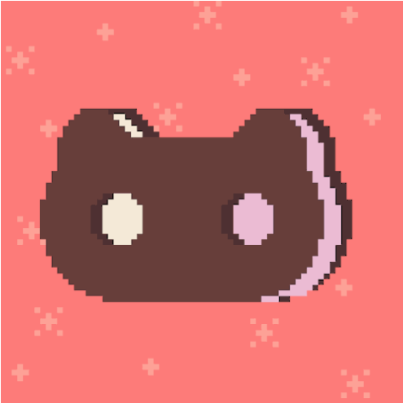

DESCRIÇÃO
Steven Universe (2013) - Biscoito Gatinho (Cookie Cat)
-> é o sanduíche de sorvete icônico do desenho Steven Universo. Ele aparece logo no Episódio 1 da
1ª Temporada ("O Brilho da Joia") e é o doce favorito do Steven, que canta até um jingle famoso
sobre ele.
Aparição: 1ª Temporada, Episódio 1 - 1 minuto e 10 segundos (01:10)
INGREDIENTES
Para o biscoito de chocolate:
- 1 xícara de farinha de trigo
- 1/2 xícara de cacau em pó 100% ou 50% (evite achocolatado para a cor ficar bem escura)
- 1/2 xícara de açúcar mascavo ou refinado
- 1/2 xícara (100g) de manteiga sem sal em temperatura ambiente
- 1 ovo médio
- 1 colher de chá de essência de baunilha
- 1 pitada de sal
Para o recheio de sorvete:
- 1 pote de sorvete de creme/baunilha
- 1 pote de sorvete de morango
MODO DE PREPARO
-
Preparando a massa e cortando:
- Em uma tigela, bata a manteiga e o açúcar até virar um creme fofinho. Adicione o ovo e a baunilha e misture bem.
- Peneire a farinha, o cacau em pó e o sal sobre a mistura. Mexa com as mãos até formar uma massa homogênea que não grude nos dedos.
- Embrulhe a massa em plástico filme e leve à geladeira por 30 minutos para firmar.
- Abra a massa com um rolo entre duas folhas de papel manteiga (deixe com cerca de 0,5 cm de espessura).
- Use um cortador em formato de cabeça de gato (ou faça um molde de papelão e corte com a faca). Em metade dos biscoitos, use um canudo para furar dois círculos formando os olhos.
-
Assando:
- Disponha os biscoitos em uma assadeira forrada com papel manteiga.
- Asse em forno preaquecido a 180°C por cerca de 10 a 12 minutos.
- Retire do forno e deixe esfriar completamente para não derreter o sorvete.
-
Montagem do sanduíche:
- Retire os sorvetes do congelador por 5 minutos para amolecerem levemente (apenas para conseguir moldar).
- Em uma superfície plana com plástico filme, coloque colheradas de sorvete de baunilha e morango lado a lado, pressionando para que fiquem com a altura de 1,5 cm e divididos ao meio. Leve de volta ao freezer por 20 minutos para endurecer.
- Corte o bloco de sorvete bicolor no mesmo formato de gato do biscoito.
- Monte o sanduíche: coloque um biscoito liso por baixo, o bloco de sorvete bicolor no meio e o biscoito com os olhinhos por cima.
- Embrulhe individualmente em plástico filme e deixe no freezer por pelo menos 1 hora antes de servir.